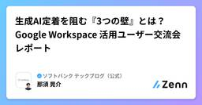

ソフトバンク テックブログ（公式）のフィード
https://zenn.dev/p/softbank
ソフトバンクのエンジニアが、ソフトバンクの業務・サービスを支える技術をテーマに、現場の知見や取り組みを発信する技術ブログです。 2026年３月以前のブログ https://www.softbank.jp/biz/blog/cloud-technology/
フィード

Weekly AWS アップデート情報 - 2026年10月19日
ソフトバンク テックブログ（公式）のフィード
皆さま、こんにちは。Weekly AWSでは、毎週 AWS プロダクトのアップデート情報をお届けしています。それでは、先週 (10月12日～18日) の主な AWS アップデート情報を紹介します。 今週の注目アップデート AWS Lambda は「Lambda Web Functions」を発表AWS Lambda は、コードが直接 HTTP リクエストを処理する新しいサーバーレスコンピューティングプリミティブ「Lambda Web Functions」を発表しました。ポートをリッスンし、通常の HTTP サーバーと同様にリクエストを処理できます。主な特長は以下の通りで...
2日前

生成AI定着を阻む『3つの壁』とは？Google Workspace 活用ユーザー交流会レポート
ソフトバンク テックブログ（公式）のフィード
2026年9月14日（月）に開催された「第1回 Google Workspace 活用ユーザー交流会」の模様をお届けします。本イベントには約20社、30名以上のお客様にご参加いただきました。この記事では、前半の事例講演（第1部）の内容と、私たちGoogle Workspaceを担当しているSEチームが企画・進行を務めた後半のワークショップ（第2部）の様子を中心にご紹介します。 ■ 第1部：ソフトバンクおよびユーザー企業様による活用事例のご紹介第1部では、ソフトバンクのAI・DX人材育成サービス「Axross Recipe（アクロスレシピ）」担当者より、「ソフトバンクの実践に学ぶA...
2日前

【Skill（スキル）って何？】Google公式の実装から学ぶスキルの書き方と仕組みを徹底解剖！
ソフトバンク テックブログ（公式）のフィード
はじめに最近、AIエージェントやコーディングアシスタントの界隈で「Skill（スキル）」という言葉をよく見かけるようになりました。「サブエージェント（Subagents）と何が違うの？」「どうやって書けばAIがうまく使ってくれるの？」そんな方に向けて、この記事では Google 公式の Agent-CLI で実際に使われている Skill のコードを見ながら、その仕組みと書き方のテクニックをわかりやすく解説します。 1. 最近よく聞く「Skill（スキル）」って結局なに？ なぜ「サブエージェント」を増やすだけでは限界があるのか？AIに高度な作業をさせたいとき、これ...
9日前
Weekly AWS アップデート情報 - 2026年10月13日
ソフトバンク テックブログ（公式）のフィード
皆さま、こんにちは。Weekly AWSでは、毎週 AWS プロダクトのアップデート情報をお届けしています。それでは、先週 (10月5日～11日) の主な AWS アップデート情報を紹介します。 今週の注目アップデート Amazon Bedrock で TwelveLabs Pegasus 1.5 の提供を開始Amazon Bedrock で TwelveLabs Pegasus 1.5 が利用可能になりました。これは、動画から構造化されたタイムコード付きのメタデータを生成する video-to-text モデルです。Pegasus 1.5 は動画全体を読み取り、何がい...
10日前
Weekly Google Cloud アップデート情報 - 2026年10月13日
ソフトバンク テックブログ（公式）のフィード
Weekly Google Cloud アップデート情報 - 2026年10月13日 ~ Gemini Enterprise: Antigravity 機能へのアクセス制御 ~皆さま、こんにちは。先週 (2026/10/02 - 2026/10/08) の主な Google Cloud（旧GCP）のアップデート情報を紹介します。※本記事の引用元:Google Cloud リリースノート 注目のアップデートGemini Enterprise: Antigravity 機能へのアクセス制御管理者は、組織内のユーザーが以下の Google Antigravity 機能へアク...
11日前
新卒エンジニア3人でAWS Summit Japan 2026へ！ 現地で見つけた「気になる技術」を紹介します
ソフトバンク テックブログ（公式）のフィード
はじめにこんにちは！ ソフトバンク株式会社 AI・クラウドプラットフォーム本部の新卒エンジニアの鈴木、伊澤、戸崎です。2026年6月25日・26日に幕張メッセで開催された「AWS Summit Japan 2026」に、同期3人で参加してきました！本記事では、熱気あふれる会場の様子と、私たち3人がそれぞれ気になった展示やセッションを紹介します。鈴木は「AIが継続的に関わる相棒になるための基盤」、伊澤は「AI時代に人が技術力をどう育てるか」、戸崎は「AIに任せる領域とシステムで制御する領域の境界」に注目しました。新卒エンジニアの視点で感じた驚きや、これから試してみたいことも交え...
11日前
生成AI時代のGoogle Chromeセキュリティ「Chrome Enterprise Premium」とは？
ソフトバンク テックブログ（公式）のフィード
1. はじめに今や、多くの業務がWebブラウザ上で行われています。社内チャット、ファイル共有、顧客管理、そして生成AIの利用まで、ブラウザが業務の主要な入口となっています。その一方で、情報システム部門が把握しにくいセキュリティリスクも生じています。シャドーAIの拡大特に近年注目されているのが、会社で承認・管理されていないAIツールやサービスを業務で利用する「シャドーAI」です。調査によると、日本企業の73％が、シャドーAIを把握できていない、または把握していても有効な対策を取れていないと回答しています。未承認の生成AIサービスに、社員が顧客情報や社外秘のソースコードなどを...
11日前
UIを作り込む前に動かす。AI駆動画面開発の試行錯誤
ソフトバンク テックブログ（公式）のフィード
はじめに私は入社 2 年目のエンジニアです。業務では約 3 カ月、複数の処理をノーコードで組み合わせてワークフローを作成できる Web アプリケーションの画面開発を担当してきました。このアプリケーションの中心機能は、GUI（Graphical User Interface）上でノードを配置してつなぐエディターです。あわせて、この機能を利用するための周辺画面も複数あります。私は、こうした画面群の設計から実装までを担当しました。そのため、画面をどう設計するかも自分で考える必要がありました。開発は 1 週間単位のスプリントで進めており、各スプリントで実際に動かせる画面を完成させる必要が...
15日前
AIに手元の資料を読ませたくて、ローカル知識ベースを作ってみた
ソフトバンク テックブログ（公式）のフィード
はじめにコーディングエージェントは、コードやドキュメントを grep などで探して読めます。設計書・仕様書・運用手順などのテキスト文書で、設定キーや関数名のように探す文字列が分かっているときには有効な方法です。一方、設計や運用について調べるときには、こんな場面もあります。知りたい内容は説明できるが、資料で使われている用語が分からない質問と資料とで表現が違い、文字列の一致だけでは見つけにくいリポジトリ外の設計 Wiki、PDF、Office 文書もまとめて調べたいそこで、用語による全文検索と意味検索を組み合わせ、文書形式をまたいで必要な箇所を探せるローカル知識ベースを作...
15日前
Langflow のフローを本体なしで動かす ― lfx で単体コンテナにするときにつまずいたポイント
ソフトバンク テックブログ（公式）のフィード
はじめに私は社内で、データ収集〜AIエージェント構築ができる仕組みを開発しており、その中でオープンソースのワークフロー構築ツール Langflow を利用しています。今回の開発では出来上がったワークフローをコンテナーイメージとして書き出し、任意の環境で起動できるようにする必要がありました。書き出すイメージは、Langflow 本体がなくても単体で起動でき、エディターでフローを直してもデプロイ済みの API の挙動が変わらないことが条件でした。ワークフローの数だけイメージを作るので、1 つあたりは小さく、すぐ起動することも求められました。Langflow を調べるうちに、フロー...
16日前
Weekly Azure アップデート情報 - 2026/09/29
ソフトバンク テックブログ（公式）のフィード
Weekly Azure アップデート情報 - 2026/09/29 ～[一般公開] 一般提供: Azure Copilot トラブルシューティングエージェント～皆さま、こんにちは。Weekly Azure では、今週もMicrosoft Azureのプロダクトアップデート情報をお届けします。直近2週間 (2026/08/28 - 2026/09/10) の主な Azure アップデート情報をお送りいたします。 今週の注目アップデート ・[一般公開] Azure Copilot トラブルシューティングエージェントAzure Copilot トラブルシューティングエ...
18日前
Weekly Google Cloud アップデート情報 - 2026年10月6日
ソフトバンク テックブログ（公式）のフィード
Weekly Google Cloud アップデート情報 - 2026年10月6日皆さま、こんにちは。先週 (2026/09/25 - 2026/10/01) の主な Google Cloud（旧GCP）のアップデート情報を紹介します。※本記事の引用元:Google Cloud リリースノート 注目のアップデートGemini Enterprise: アプリとデータストアのきめ細かなアクセス制御の構成管理者は、Google Cloud コンソール、Google Cloud CLI、または REST API を使用して、特定の Gemini Enterprise アプリや...
19日前
Weekly AWS アップデート情報 - 2026年10月5日
ソフトバンク テックブログ（公式）のフィード
皆さま、こんにちは。Weekly AWSでは、毎週 AWS プロダクトのアップデート情報をお届けしています。それでは、先週 (9月28日～10月4日) の主な AWS アップデート情報を紹介します。 今週の注目アップデート OpenAI 搭載の Amazon Bedrock Managed Agents (BMA) が利用可能に（プレビュー）AWS と OpenAI が共同開発した Amazon Bedrock Managed Agents (BMA)がプレビュー版として利用可能になりました。BMA は、AWS ネーティブに設計され、AWS リソースと統合された Open...
19日前
【業務革命】今、Google Workspace のGeminiサイドパネルが熱い！作業が激変する最新活用術
ソフトバンク テックブログ（公式）のフィード
Google WorkspaceのGeminiサイドパネル活用が今熱い理由本記事では、Google Workspaceの各アプリケーションで利用できる「Geminiサイドパネル」の最新機能を活用し、データ入力や資料作成といった日常業務を効率化する実践的な手法を解説します。 なぜ今、仕事の効率化にサイドパネルが欠かせないのか日常業務でAIを活用する際、別タブでチャット画面を開いてやり取りする方法が一般的かもしれません。しかし、作業スピードを一段引き上げるには、アプリ画面の横に常時表示できる Google Workspace with Gemini の「サイドパネル」の活用が有効...
24日前
BigQuery 会話分析 データエージェント超入門【連携編】-Gemini Enterprise を中心に
ソフトバンク テックブログ（公式）のフィード
BigQuery で作ったデータエージェントは、ご自身のアプリケーションはもちろんのこと、Gemini Enterprise からも使えます。データを分析するユーザーが BigQuery のコンソールを開かなくても、日本語で質問し、表やグラフで回答を受け取りインサイトを得られる様になります。この記事では、作成編のデータエージェントを Gemini Enterprise に登録する手順を紹介します。同じプロジェクトなら Agent Registry から選び、別のプロジェクトならエージェントカードの JSON を渡して登録します。後半では、利用者への共有、初回の認証、実際に表示されたグラ...
24日前
Sandbox設定から読み解く身近なISO/IEC 4200
ソフトバンク テックブログ（公式）のフィード
Sandbox設定から読み解く身近なISO/IEC 42001技術者が知っておきたいAIガバナンスの基本読了目安：約10分※Codexの設定仕様は、2026年9月16日時点の公式ドキュメントで確認しています。 要約Codexのサンドボックス設定には、AIにどこまで操作を許可するかというガバナンス上の判断が含まれます。本記事では、ファイルへの書き込み、承認、ネットワークアクセスといった身近な設定を例に、その考え方をISO/IEC 42001と対応付けて説明します。 AIガバナンスは技術者から遠いものなのか「AIガバナンス」と聞くと、どのようなものを想像するでし...
24日前
BigQuery 会話分析 データエージェント超入門【利用編】
ソフトバンク テックブログ（公式）のフィード
作成編では、公開データを使って「EC 売上分析」を作りました。この記事では、そのエージェントに質問し、検証済みクエリや指示が回答にどう現れるかを確認します。後半では、組織のメンバーにデータポータルから使ってもらう手順を紹介します。画面と回答は 2026 年 9 月に記録したものです。公開データの更新や生成結果の違いにより、手元の数値・文章とは一致しない場合があります。 検証済みクエリが使われたか確かめる公開したエージェントに「Complete 注文の売上相当はいくら？」と聞きます。注文ステータスが Complete（完了）のものを対象にした質問で、作成編で登録した検証済みクエリと...
24日前
自然言語だけで地物情報の取得・可視化を実現するAIエージェントの構成
ソフトバンク テックブログ（公式）のフィード
背景と課題国土交通省が公開している人流データや建物情報、自治体が提供する各種オープンデータなど、地物や人流に関するデータは年々整備が進んでいます。一方で、以下の理由から、分析して示唆を得るまでのコストが高いと感じていました。データ形式の分かりにくさ：GeoJSONやShapefileなど、地物情報特有の形式に慣れていないと扱いにくい。それに伴い、データを取得するAPIなどの仕様理解にも負荷を伴う。学習コストの高さ：可視化、分析に用いるQGISやArcGIS（いずれも地理情報の分析、可視化に用いるツール）は高機能だが、学習コストが高いこれらの課題を解決するため、エージ...
24日前
OpenAI Agents API を試す：GitHub の OSS を一言で使わせてみた
ソフトバンク テックブログ（公式）のフィード
ソフトバンクのCHENです。普段は、データ構造化ツール「TASUKI Annotation」の技術研究＆全社RAG基盤に携わっています。あわせて生成AI・エージェント技術の探索にも取り組み、実務投入を見据えた技術検証を行っています。本記事では、2026年9月にパブリックベータになった OpenAI の Agents API を、GitHub の OSS を一言で使わせる題材で試しました。 TL;DRAgents API は、Codex のように自律的に作業するエージェントを、実行環境ごと1つの API として使える仕組みです。Chat Completions API や Resp...
24日前
GPT Image 2.5 と GPT Image 2 の日本語スライド生成を比較検証
ソフトバンク テックブログ（公式）のフィード
ソフトバンクのCHENです。普段は、データ構造化ツール「TASUKI Annotation」の技術研究＆全社RAG基盤に携わっています。あわせて生成AI・エージェント技術の探索にも取り組み、実務投入を見据えた技術検証を行っています。2026年9月8日に OpenAI から GPT Image 2.5 がリリースされたので、前回の記事と同じ日本語スライド生成の題材で、GPT Image 2 との差を検証しました。 TL;DRGPT Image 2.5 は API 上で flare（速度重視）と sunburst（精細さ重視）の2モデルです。コスト: 同じ quality=hig...
24日前